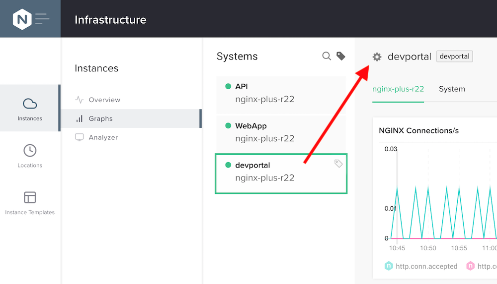
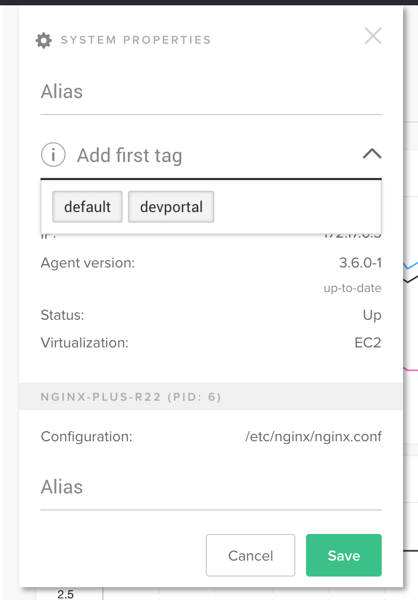
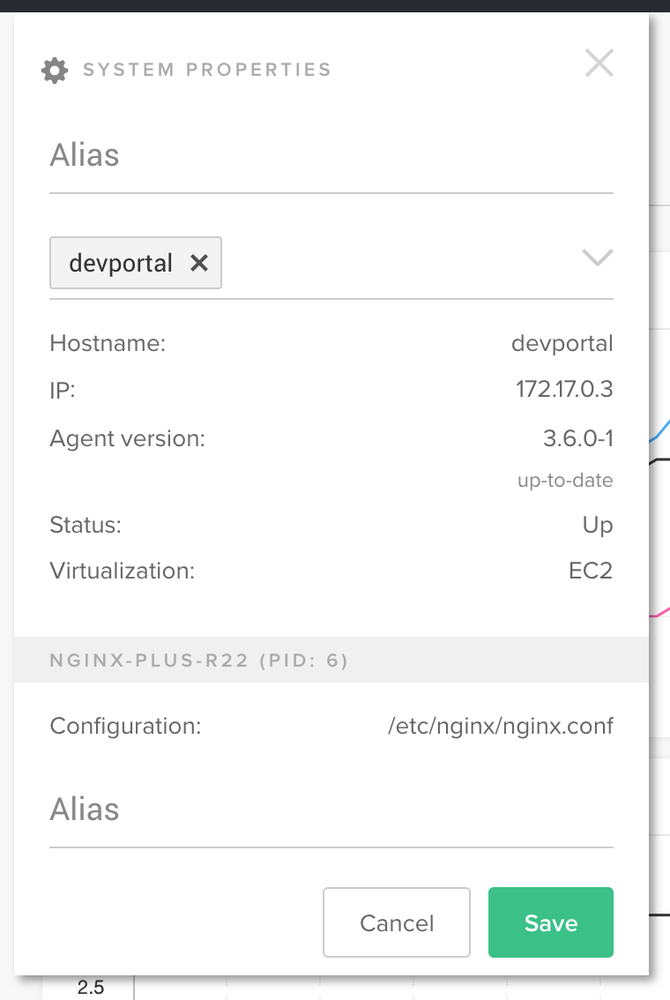
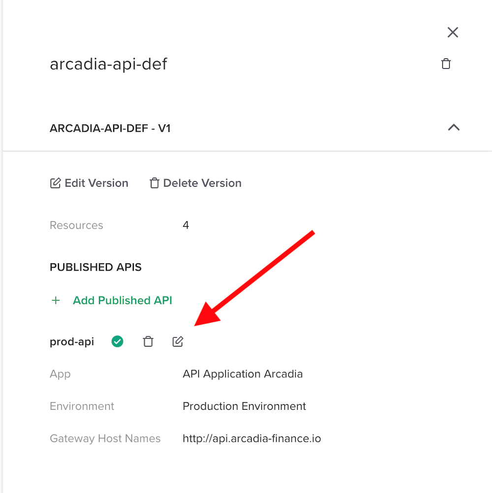
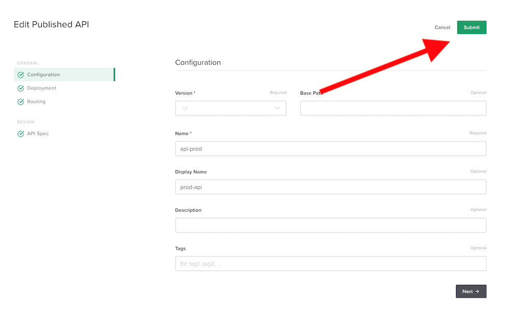
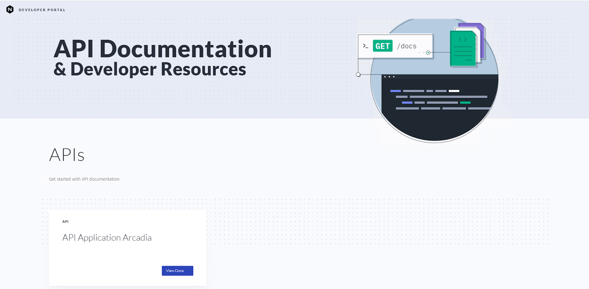
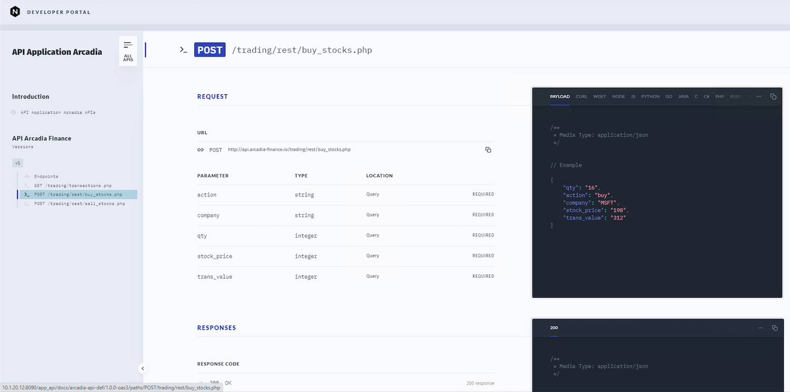

Module 5 - Developer Portal
Note
If you remember, we deployed 3 instances. One for the WebApp, one for the APIs and another one for the DevPortal. We will use this one in this lab.
When we uploaded the OAS3.0 file, this file included the API documentation. There is only one step to publish the documentation into the DevPortal instance.
Step 1 - Assign the DevPortal tag to the DevPortal instance
The controller needs to know which instance to use to push the Developer Portal into it. To do so, we have to add a tag to the target instance. We will use the instance devportal
In the controller GUI, click on Infrastructure > Instances > Graphs
Select the devportal instance and click on the gear icon close to the name of the instance

Select or enter devportal in the tag field, lowercase


Click save
Note
We need to force to push the API configuration to the GW in order to push the documentation to the DepPortal
Step 2 - Force a push
In Services > APIs > API Definitions
Edit your Publish API and click on submit


Step 3 - Navigate to the Developer Portal
In the Jumphost, open Chrome
Click on the Dev Portal APIm bookmark

Click on the published API doc
Navigate to the endpoints

Note
Navigate in the Developer Portal. As you can notice, this has been populated automatically thanks to the OAS file. As a reminder, the OAS file looks like that (this is an extract for the buy stock API.
/trading/rest/buy_stocks.php:
post:
summary: Add stocks to your portfolio
requestBody:
content:
application/json:
example:
trans_value: '312'
qty: '16'
company: MSFT
action: buy
stock_price: '198'
parameters:
- in: query
name: trans_value
required: true
schema:
type: integer
- in: query
name: qty
required: true
schema:
type: integer
- in: query
name: company
required: true
schema:
type: string
- in: query
name: action
required: true
schema:
type: string
- in: query
name: stock_price
required: true
schema:
type: integer
responses:
'200':
description: 200 response
content:
application/json:
example:
status: success
name: Microsoft
qty: '16'
amount: '312'
transid: '855415223'
{kind=link}
{kind=link}
{kind=link}
{kind=link}
{kind=link}
{kind=link}
{kind=link}